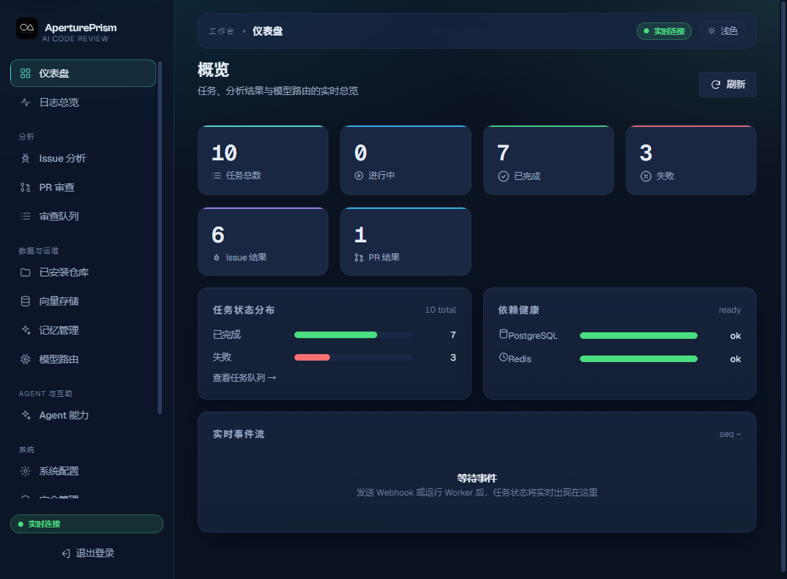
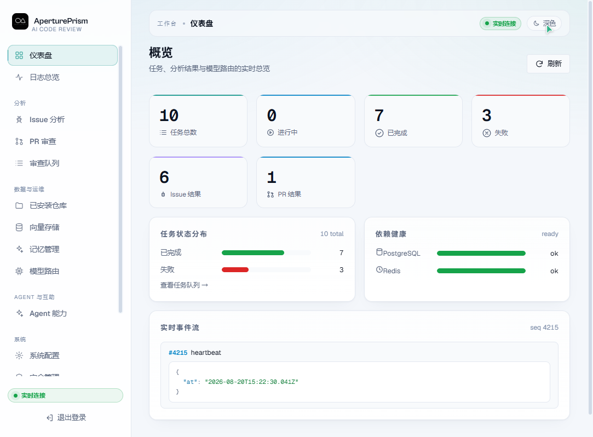
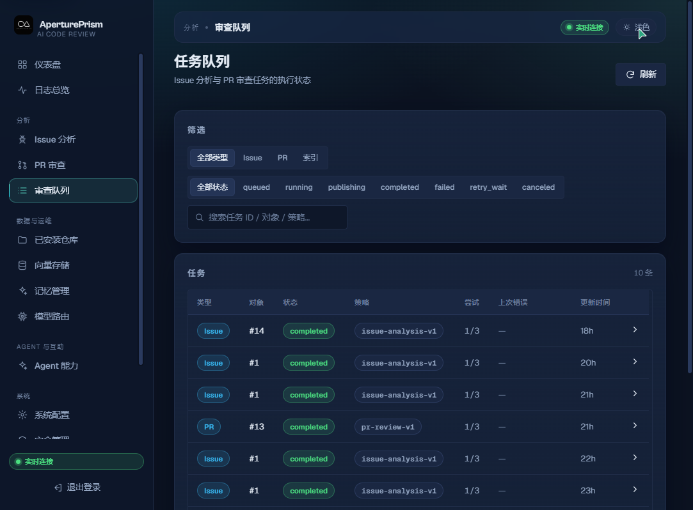
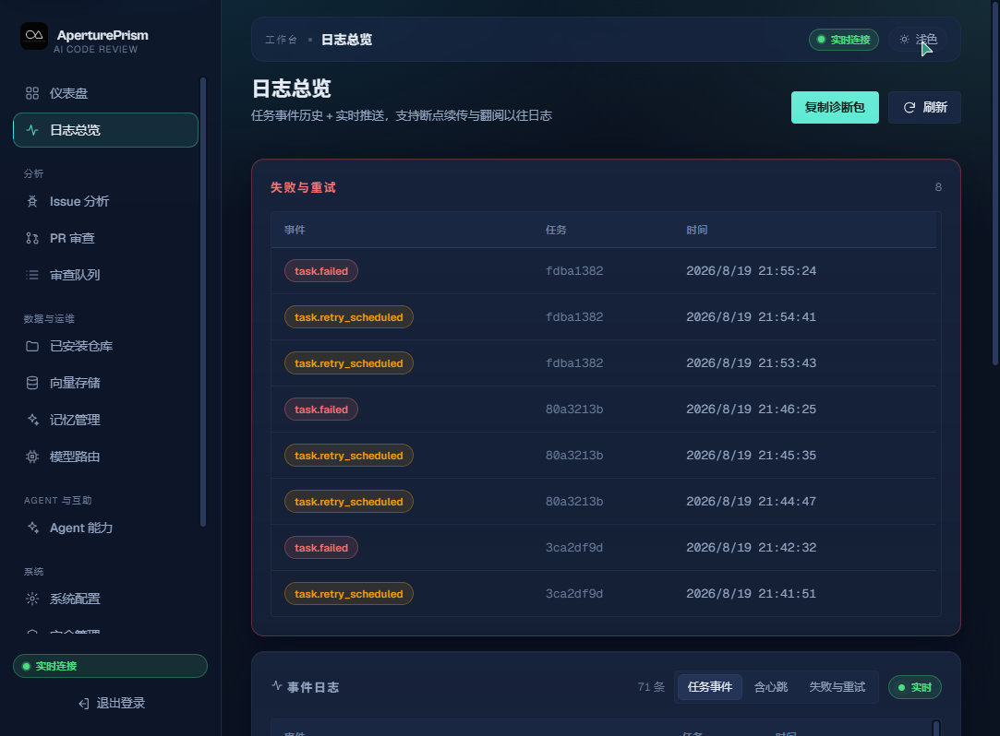

Issue 结构化分析
Webhook 幂等入库 → 上下文预算化 → 结构化分级（S0–S3 / P0–P3 / 完整度），自动识别广告垃圾，幂等评论 + 自动打标。
GITHUB ISSUE ANALYSIS · PR REVIEW · AI
不是单个模型调用，而是一整套生产级链路：多模型路由驱动 Issue 结构化分级与 PR 多专家审查，幂等发布评论 · 重复检测 · 仓库记忆 · 深色 Web 控制台 · QQ 机器人 · Docker 一键部署。
从 GitHub Webhook / OAuth 接入，到持久任务引擎、多模型路由与增强能力（重复检测 · 仓库记忆 · 专家团队），再到幂等发布与运维——AperturePrism 让每次审查都稳定、可追溯、可运营。
围绕审查全生命周期编排，能力可整合、可独立开关。
Webhook 幂等入库 → 上下文预算化 → 结构化分级（S0–S3 / P0–P3 / 完整度），自动识别广告垃圾，幂等评论 + 自动打标。
diff 解析与行映射、大小 / 预算降级、行级 finding + 服务端严重度策略，编制 Check Runs，幂等发布 Review。
模板清洗 + 信号抽取（错误码 / 路径 / 堆栈）+ 全文 GIN + pgvector 向量召回 → 服务端模型裁决，精准识别重复。
每次分析 / 审查自动沉淀「反思」，Scheduler 定期用模型合并为规则 / 知识，下次分析时上下文热回灌。
6 个内置技能（triage / security / dependency / performance / docs / test）+ 多专家并行审查 + 主编合并。
NTQQ 第三方协议（OneBot 11 / Satori / Milky）与官方开放平台 api-v2，把审查能力带到 IM 触手可及之处。
概览 / 日志 / Issue / PR / 队列 / 仓库 / 向量存储 / 记忆 / 配置 …… 实时 SSE 事件流 + 断线回放，单页全覆盖。
OpenAI 兼容 Provider，密钥 AES-GCM 加密；统一 deadline、重试与故障转移，角色级策略按需路由。
api / 各 worker / web 全栈打包，迁移备份脚本齐全；WebUI 一键检查更新，失败自动回滚。
审查不止是一个「生成回复」的模型调用，而是六个清晰阶段。
GitHub Webhook（验签 + 幂等入库）、WebUI 手动触发、QQ 机器人指令。
持久化任务引擎（状态机 / 租约 / 重试 / 幂等），Scheduler 回收租约与到期重试。
多模型路由在统一 deadline 下调用：Issue 输出结构化分级，PR 输出行级 finding。
重复检测、仓库记忆、Agent Skills + 多专家并行审查，让结论更聪明。
幂等发布 GitHub 评论 / Review（head SHA 绑定），标签规则自动打标。
SSE 实时事件 + 断线回放、审计、备份、速率限制、在线更新，全程可运维。
事件入口与 API 统一接入，任务被有韧性地调度到各 worker 并行执行。
AES-GCM 加密密钥 · 角色级策略 · 统一 deadline / 故障转移
pgvector 召回 + 全文 GIN，召回与裁决分离
实时增量 + 断线回放，审查进度尽在掌握
浅色 / 深色双主题，同一源码。概览、日志、任务队列一目了然。




一行命令，Docker 全栈拉起；也可以用源码方式在本地开发。
WebUI 内提供一键在线更新 · 失败自动回滚 · 参考 环境变量模板
接入只需三类东西：GitHub App、一个自配的 OpenAI 兼容接口、一份环境文件。完整步骤看配置教程 ↗。
复制 .env.example 为 .env.production，填好数据库 / Redis / 主密钥。
配置 GitHub App 与 OAuth；在「模型路由」填一个 OpenAI 兼容 Provider，再用主密钥加密 Key。
跑迁移 → 拉起全栈 → 手动触发一次分析，任务 completed 即链路全通。